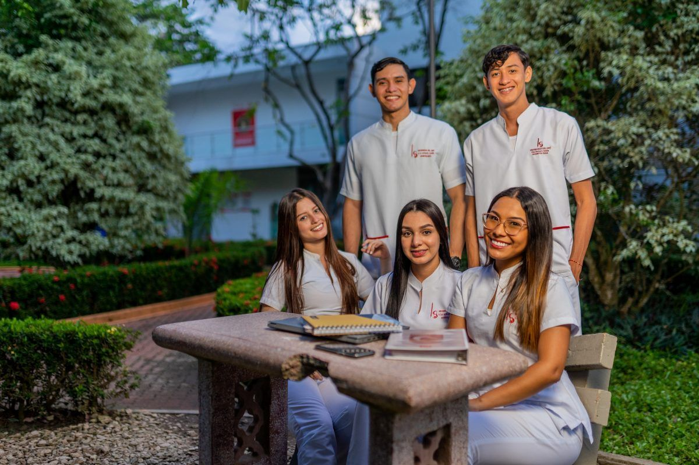
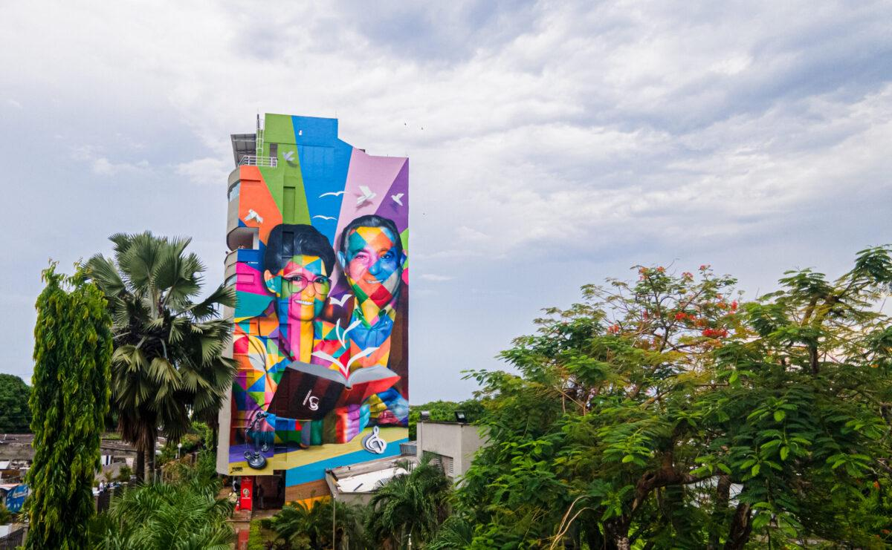

Queremos acompañarte a ser parte de UNISINÚ
____

Pregrados
18 PROGRAMAS

Posgrados
33 PROGRAMAS

Admisiones
Conoce cómo ingresar
Avanza en tu Formación
La Universidad del Sinú –Elías Bechara Zainum- se ha destacado por ser una institución gestora de productos científicos de alta calidad y esto se debe a su continua laboriosidad encaminada a desarrollar investigaciones científicas que logran responder a las necesidades de los diferentes actores de la sociedad colombiana.
La Universidad Del Sinú -Elías Bechara Zainum, reconocida tambien en ranking Times Higher Education, se ha posicionado entre las mejores universidades del país con sus grupos de investigación ubicados en las más altas categorías de Colciencias (GNOCIX, Grupo interdisciplinario de investigación – CUS, ARQUNIDOS y TESEEO en la categoría A1, y Ciencias Sociales Aplicadas y Derecho, CINJUN en la categoría A).
18 PROGRAMAS
33 PROGRAMAS
Conoce cómo ingresar